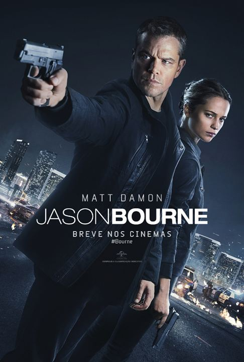

Diretor: Paul Greengrass
Com: Matt Damon, Alicia Vikander
Gênero: Ação, suspense
Censura: 14
Tempo de duração: 123 min
Sinopse:Jason Bourne está novamente sendo caçado pela CIA. Começa quando Nicky Parsons, um ex-agente da CIA que ajudou Bourne, que faliu e agora trabalha com um homem que é um delator e está disposto a expor as operações negras da CIA. Nicky invade a CIA e baixa tudo em todos os seus Black Ops, incluindo Treadstone, da qual Bourne fazia parte. E Heather Lee, uma agente da CIA, descobre o hack e chama a atenção do diretor da CIA Dewey, o homem por trás do Black Ops. Ele ordena que Parsons seja encontrado e, esperançosamente, Bourne também.